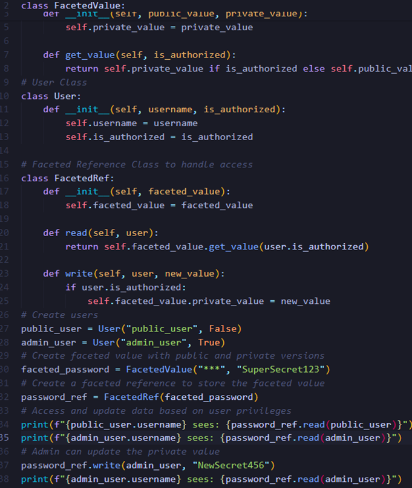
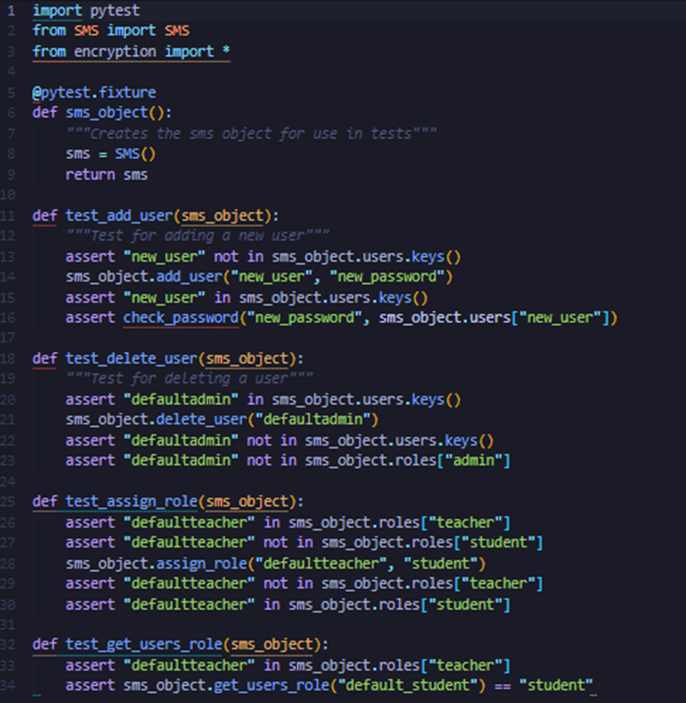

Read Schmitz et al (2016) article about faceted data:
Do you think this is a good approach to protect systems from data leakage?
Yes, faceted values are a good way to protect systems from data leakage. They allow different users to see different versions of the same data depending on their access rights. This makes sure that sensitive information is only visible to those who are allowed to see it.
What are the pros and cons?
Pros:
• Good security: Only authorized users can see sensitive data, while others see a safer version.
• Flexible: It can handle both public and private data without needing separate systems.
• Efficient: It runs everything in one system, rather than having multiple processes for different user levels.
• Easy to add: You can use this approach without changing the core of the programming language.
Cons:
• Complexity: It can make the system harder to build and manage because you have to handle multiple versions of the data.
• Performance: Managing these different data versions can slow things down slightly.
• Risk of errors: If the system isn't built correctly, it could accidentally show sensitive data to the wrong users.
Reference:
Schmitz, T. Rhodes, D. Austin, TH. Knowles, K. and Flanagan, C. (2016). Faceted Dynamic Information Flow via Control and Data Monads. In Proceedings of the 5th International Conference on Principles of Security and Trust - Volume 9635. Springer-Verlag, Berlin, Heidelberg, 3–23. DOI: 10.5555/3089491.3089493
Create a basic outline design of how you would create such a system in Python.

Seminar summary:
In this seminar it began with questions. I could not attend the seminar in person but I watched the recording. Many of the participants were asking questions about the submission process for next week. I found this useful but it also seemed to show that everyone was doing things differently that slightly worried me about my project. I am making good progress with it and although I have made some changes I think that it fits the brief. We then went on the paragraph summary task which was interesting as I could hear some examples and the check them against my own. See below:
Within the School management system project, it is important to have the proper implementation of security features. This includes the use of authentication. With the project I have developed authorization is done through a username and password that is required to access the software. Secondly the project uses authorization done through user roles to allow or deny access to certain sections of the program. The project also will have an activity log that has yet to be implemented this shall allow admin uses to see the activities of other users that have logged on.
Summary post:
Overall, the use of TrueCrypt should be done so with caution being taken. From the discussions of my peers, it seems that the ideas about how it mitigate the risks have been thought through. The idea of strong passwords and disk encryption were discussed by T .Edge (2024) within his analysis of TrueCrypt. I found these ideas valid and useful when thinking about TrueCrypt. Although I did wonder how viable this could be if someone was not fully aware of the vulnerabilities of TrueCrypt.
The fact that many of the issues seen within TrueCrypt were low to medium in terms of their severity (Junestam & Guigo, 2014) means that the system may still have a use if in the right hands. Due to the issues not being of the highest severity I feel the system could have been altered to allow for these issues to be resolved. Unfortunately, TrueCrypt updates being discontinued in 2014 removes the chance of this happening.
References:
TrueCrypt (2014) TrueCrypt. Available from: https://truecrypt.sourceforge.net/ [Accessed October 17th, 2024].
Junestam, A. & Guigo, N. (2014) Open Crypto Audit Project TrueCrypt: Security Assessment.
Edge, T. Initial Post. SSD July 2024. Forum post submitted to the University of Essex Online. [Accessed October 17th, 2024].
Project update:
I have been very busy over the last week so I have not been able to get much of my project done. This week though I did write some tests that I have been using for some of my functions. I mainly focused on testing the CRUD functions for this task. See screenshot below:
